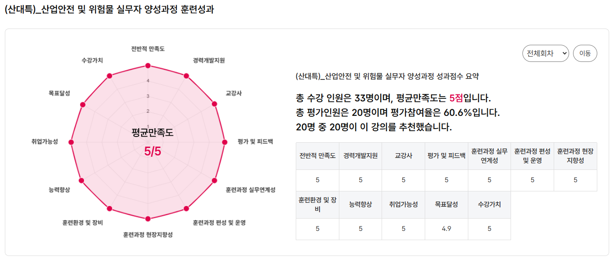

산대특, 국민내일배움카드와는 뭐가 다른가요
국민내일배움카드는 들어봤어도 산대특은 처음이라 헷갈리는 분이 많습니다. 결론부터 말씀드리면 산대특도 국민내일배움카드로 참여하는 훈련입니다. 다른 것은 과정을 누가 고르고 심사하느냐입니다. 일반 계좌제는 직업능력심사평가원이 전국 단위로 심사하지만, 산대특은 울산지역인적자원개발위원회가 울산의 산업 수요를 직접 조사해 과정을 발굴·심사합니다.
| 구분 | 일반 계좌제 과정 | 산대특 |
|---|---|---|
| 심사 주체 | 직업능력심사평가원 (전국 단위) | 울산지역인적자원개발위원회지역 RDC |
| 과정 선정 기준 | 전국 공통 기준 | 울산 산업 수요 기반 |
| 훈련장려금 | 과정별 상이 | 140시간 이상 시 월 20만원동일 기준 |
| 국민내일배움카드 | 필요 | 필요 (동일) |
※ 자료: 울산지역인적자원개발위원회, 2026년 산업구조변화대응 등 특화훈련 안내
9월 28일 개강 — 두 과정 중 나에게 맞는 것은
지행재직업전문학교는 울산인자위 승인을 받아 두 개의 산대특 과정을 같은 날 개강합니다. 둘 다 울산의 지원대상산업·직종(용접·전기·산업안전·정보통신·건설·자동차정비·소방·사회복지 등)에 해당하지만, 받는 것은 다릅니다.
| 구분 | 위험물 안전관리 양성 | 선임안전관리 향상 |
|---|---|---|
| 대상 | 실업자오전반 | 재직자저녁반 |
| 훈련시간 | 180시간 · 30일 | 220시간 · 72일 |
| 시간대 | 오전 · 1일 6시간 | 저녁 · 1일 3시간 |
| 개강일 | 9월 28일 | 9월 28일 |
| 정원 | 20명 | 20명 |
| 훈련장려금 | 월 20만원 | 해당 없음 |
| 특별훈련수당 | 비대상 | 비대상 |
실업자 오전반·재직자 저녁반, 어느 쪽이 나에게 맞는지 모르겠다면?
전화로 5분 상담받기훈련장려금과 자기부담금, 정확히 얼마인가요
산대특의 돈 계산은 훈련장려금과 자기부담금 두 가지입니다. 장려금은 140시간 이상 과정에 월 20만원, 자기부담금은 훈련비 300만원 이하일 때 10%이고 그 위로는 구간별 정액입니다. 180시간·220시간이라 부담스러워 보이지만, 시간이 길어야 받을 수 있는 구조입니다.
울산은 자기부담금 면제 조건이 따로 있습니다
울산은 고용위기 선제대응지역으로 지정되어, 요건에 해당하는 분은 2027년 1월 11일까지 자기부담금이 면제됩니다. 울산 남구 소재 사업장에 다니고 계시거나 남구에 3개월 이상 거주하신 경우가 해당됩니다. 남구 밖에 사셔도 남구로 출근하시면 대상이 될 수 있습니다. 해당 여부가 애매하면 상담에서 확인해 드립니다. 기간이 정해진 한시 조치이며, 종료되면 구간표대로 자기부담금이 다시 적용됩니다.
산대특 수강이 유리한 사람, 불리한 사람
산대특이 특히 유리한 쪽은 울산 지역 산업에서 일해 본 경험이 있고, 지금 소득이 끊겼거나 곧 끊길 예정인 분입니다. 훈련비 지원에 훈련장려금까지 겹치는 구간이 여기이기 때문입니다. 반대로 재직 중이거나 다른 급여를 받고 계시면 받는 것이 줄어듭니다.
| 임금근로자 출신 | 수강 | 훈련장려금 |
|---|---|---|
| 정년·명예퇴직 후 재취업 준비 | 가능 | 월 20만원 |
| 권고사직·계약만료 후 구직 중 | 가능 | 월 20만원 |
| 실업급여 수급 중 | 가능 | 해당 없음 |
| 재직 중 (월 60시간 이상) | 가능 (저녁반) | 해당 없음 |
| 경력 있고 시험 합격만 남음 | 가능하나 단기반 권장 | 과정 시간에 따라 |
| 자영업자 · 특고 | 수강 | 훈련장려금 |
|---|---|---|
| 폐업 후 구직 중 | 가능 | 월 20만원 |
| 폐업 예정 (영업 중 · 사업 1년 이상) | 가능 | 소득에 따라 판정 |
| 특고·프리랜서 (월 소득 500만원 미만) | 가능 | 소득에 따라 판정 |
| 사업 기간 1년 미만 자영업자 | 카드 발급 제외 | — |
| 연 매출 4억원 이상 자영업자 | 카드 발급 제외 | — |
| 공무원 · 사립학교 교직원 · 75세 이상 | 카드 발급 제외 | — |
※ 자료: 고용24 국민내일배움카드 발급안내, 고용노동부 산대특 사업운영지침(2026)
수료하면 남는 것 — 중도포기는 무엇을 잃나요
산대특은 훈련장려금이 월 단위로 나오기 때문에 "다니는 동안 받는 것"에만 눈이 가기 쉽습니다. 하지만 실제로 재취업에 쓰이는 것은 끝난 뒤에 남는 쪽입니다.
| 구분 | 수료했을 때 | 중도포기했을 때 |
|---|---|---|
| 직업훈련이력 | 고용24에 수료 이력 기록 | 수료 이력 없음 |
| 수료증 | 기관 명의 발급 | 발급 안 됨 |
| 카드 한도 | 차감 없음 | 20~100만원 차감 |
| 마지막 달 장려금 | 만족도 조사 후 지급 | 미지급 |
| 다음 훈련 | 정상 신청 | 한도 차감분만큼 제약 |
수료증에는 훈련과정명과 기간, 습득한 직무 역량이 함께 기재됩니다. 자격증은 아니지만 채용 담당자에게 "180시간 동안 무엇을 배웠는가"를 구체적으로 보여줄 수 있는 문서입니다. 교육이 끝나면 30일 안에 고용24에서 만족도 조사를 해야 마지막 달 장려금이 지급되니 잊지 마세요.
수료 후 취업 연계 — 그룹 취업지원사업부와 연결됩니다
지행재직업전문학교는 (주)위더스가 운영하는 인서비스그룹 소속입니다. 같은 그룹의 취업지원사업부가 연령·상황별 정부 취업지원 제도를 운영하고, 참여 기업에 채용 유인이 붙은 상태로 수료생을 추천합니다.
| 대상 계층 | 연계 제도 |
|---|---|
| 청년 | 청년일자리도약장려금 |
| 중장년 | 중장년 경력지원제 |
| 고령자 | 시니어인턴십 |
| 구직자 전반 | 국민취업지원제도 |
※ 훈련 수료 → 취업지원사업부 상담·제도 확인 → 참여 기업 추천 및 매칭 → 면접·채용 순서입니다. 취업을 보장하는 절차는 아니며, 채용 여부는 기업이 결정합니다.
내 상황에서 장려금·자기부담금이 얼마인지 정확히 알고 싶다면?
052-267-3172 전화 상담지행재 산대특 과정, 고용24에 공시된 성과
지행재직업전문학교가 운영한 (산대특) 산업현장 산업안전 및 위험물 관리실무자 지원과정은 고용24 공시 기준 평균 만족도 5점 만점에 5점입니다. 학교가 자체 집계한 숫자가 아니라 수강생이 직접 응답해 국가 시스템에 등록된 값입니다.

고용24 공시 — (산대특) 산업안전 및 위험물 실무자 양성과정 훈련성과 (총 수강 33명, 평균만족도 5점, 평가참여 20명 전원 추천)
취업률도 같은 방향입니다. 고용24 기준 지행재직업전문학교의 실시과정 평균 취업률은 2024·2025년 모두 울산 소재 훈련기관 평균을 웃돌았고, NCS 소분류 산업안전관리 직종으로 좁히면 격차가 더 벌어집니다. 만족도 역시 산업안전관리 직종 평균을 매년 상회했습니다.

지행재직업전문학교 실시과정 평균 취업률·만족도 — 소재지역(울산) 평균과 비교

NCS직종(산업안전관리) 취업률·만족도 — 직종 평균 대비 지행재직업전문학교 실적
"산업안전과 위험물을 전혀 모르는 상태로 시작했는데, 강사님이 알기 쉽게 설명해주셔서 생소한 개념들을 더욱 빠르고 정확하게 습득할 수 있었습니다."
— 고용24 등록 수강후기 (전반적 만족도 5점)
"이론에 현장 사례를 붙여 설명해 흡수가 빨랐고, 울산이라는 공업도시 특성에 맞는 과정이었습니다."
— 고용24 등록 수강후기 (전반적 만족도 5점)

고용24 등록 수강후기 (총 14건, 전원 별점 5점) — 학교가 아닌 수강생이 직접 남긴 기록입니다
※ 자료: 고용24 훈련과정 정보 — (산대특) 산업현장 산업안전 및 위험물 관리실무자 지원과정 훈련성과. 후기는 학교가 아닌 수강생이 고용24에 직접 등록한 기록입니다.
신청 절차 — 4단계면 끝
052-267-3172로 문의하시면 장려금 해당 여부와 개강 일정을 안내해 드립니다.
고용24 온라인 신청 또는 울산고용센터 방문. 평균 7일 소요됩니다.
140시간 이상 장기 과정은 수강신청 전 훈련 진단·상담이 필수입니다. 두 과정 모두(180시간·220시간) 해당되며, 이 단계를 빠뜨려 개강 직전에 막히는 분이 많으니 꼭 확인하세요.
고용24에서 "지행재직업전문학교" 검색 → 위험물 안전관리 양성 또는 선임안전관리 향상 과정 신청.
신청 전 자가 체크 7가지
일곱 개 중 헷갈리는 항목이 하나라도 있으면 신청 전에 전화로 확인하시는 편이 빠릅니다.
자주 묻는 질문
울산 산대특 산업안전 과정, 지금 상담하세요
실업자 오전반·재직자 저녁반 중 어떤 과정이 맞는지,
내 상황에서 장려금과 자기부담금이 얼마인지 무료로 안내받으세요.